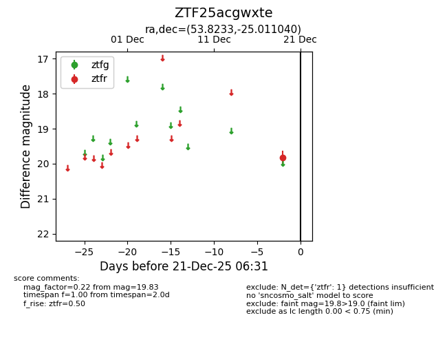
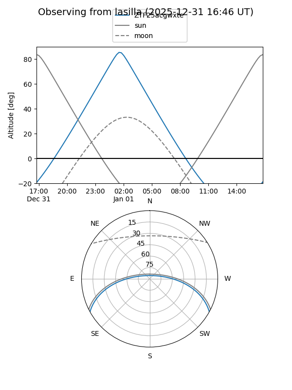
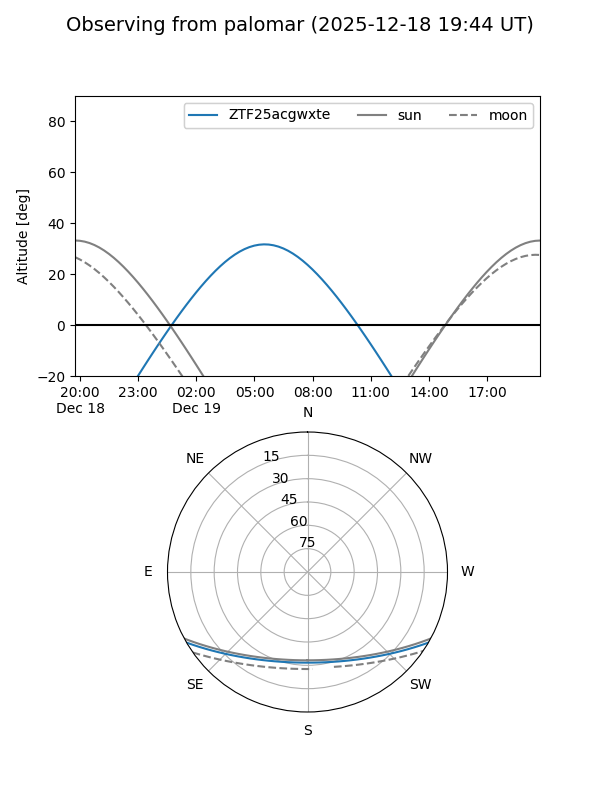

ZTF25acgwxte
Target ZTF25acgwxte at 2025-12-19 06:29
Aliases and brokers:
FINK: fink-portal.org/ZTF25acgwxte
Lasair: lasair-ztf.lsst.ac.uk/objects/ZTF25acgwxte
ALeRCE: alerce.online/object/ZTF25acgwxte
alt names
ZTF25acgwxte (ztf,fink_ztf)
Coordinates:
equatorial (ra, dec) = 53.8233,-25.01104
equatorial (HMS+DMS) = 03:35:17.58,-25:00:39.74
galactic (l, b) = (219.1037,-53.30401)
Flags:
Photometry:
last ztfr=19.83
1 ztfr detections
Lightcurve

Visibility


Additional plots